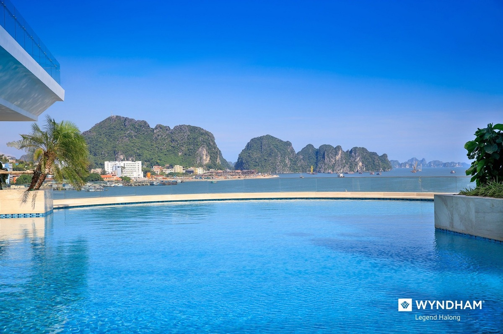

3 trải nghiệm nhất định phải thử ở Hạ Long
Du thuyền trên biển
Vịnh Hạ Long là một trong 3 điểm đến để trải nghiệm du thuyền tốt nhất châu Á, theo bình chọn của Travel and Leisure. Vùng vịnh có diện tích hơn 1.550 km2 đặc trưng với khoảng 2.000 đảo lớn, nhỏ nổi trên làn nước màu xanh lục. Đặc biệt, nơi đây cũng sở hữu nhiều hang động đẹp.
Khi trải nghiệm du thuyền, bạn sẽ được du ngoạn, nghỉ ngơi giữa vùng nước mênh mông, thăm các điểm đến mang tính biểu tượng như hang Sửng Sốt, hang Đầu Gỗ, động Thiên Cung, hòn Gà Chọi, bãi tắm Titop. Ngoài ra, các du thuyền cũng cung cấp thêm những trải nghiệm như tham quan làng chài, chèo thuyền kayak, lớp học nấu ăn, tập dưỡng sinh...
Với du thuyền cỡ lớn, Paradise Elegance là gợi ý cho du khách. Đây là con tàu dịch vụ 5 sao thuộc hãng du thuyền uy tín bậc nhất tại vịnh Hạ Long, với 6 năm liên tiếp sở hữu chứng nhận Dịch vụ xuất sắc của TripAdvisor. Tàu gồm 5 tầng với 4 hạng phòng Deluxe Balcony, Executive Balcony, Captain’s View Terrace Suite và Elegance Suite. Ngoài ra là các khu vực dịch vụ spa, nhà hàng, sun deck và quầy bar.
Với du khách yêu thích trải nghiệm riêng tư, du thuyền cá nhân FLC Albatross là gợi ý thích hợp. Hiện hãng đang khai thác các tour từ một đến 6 giờ, tham quan các điểm như bến Đoan, hòn Soi, Soi Sim, Ba Trái Đào, đảo Cát Bà , làng Chài Vung Viêng...
Chèo thuyền kayak khám phá hang động
Vịnh Hạ Long có ưu điểm nước lặng, kín gió, thích hợp để chèo thuyền kayak. Trong hành trình, du khách sẽ được chiêm ngưỡng ngững ngọn núi đá vôi cao chót vót hay tham quan các hang động trong cự ly gần. Khi qua những vùng nước trong, bạn có thể thấy cả những rạn san hô nhiều màu hay cá bơi.
Ở Hạ Long có nhiều điểm cho thuê thuyền kayak. Cụ thể, khu vực Hang Luồn, giá thuê thuyền là 50.000 đồng một lượt 2 người và khu vực Ba Hang, giá 40.000 đồng một người. Ngoài ra là khu vực đảo Lờm Bò, làng chài Cửa Vạn, Hang Cỏ, Cống Đầm, làng chài Vung Viêng, bãi cát Hòn Bàn Chân.
Ngắm hoàng hôn từ bể bơi vô cực
Bể bơi vô cực ngoài trời trong tòa nhà khách sạn 5 sao FLC Grand Hotel được xây dựng trên đồi Văn Nghệ, với độ cao hơn 100 m so với mực nước biển. Với tầm nhìn bao quát toàn bộ khu nghỉ dưỡng, thành phố sầm uất và vùng vịnh phía xa, đây là nơi lý tưởng để du khách ngắm trọn khung cảnh hoàng hôn ở Hạ Long.
